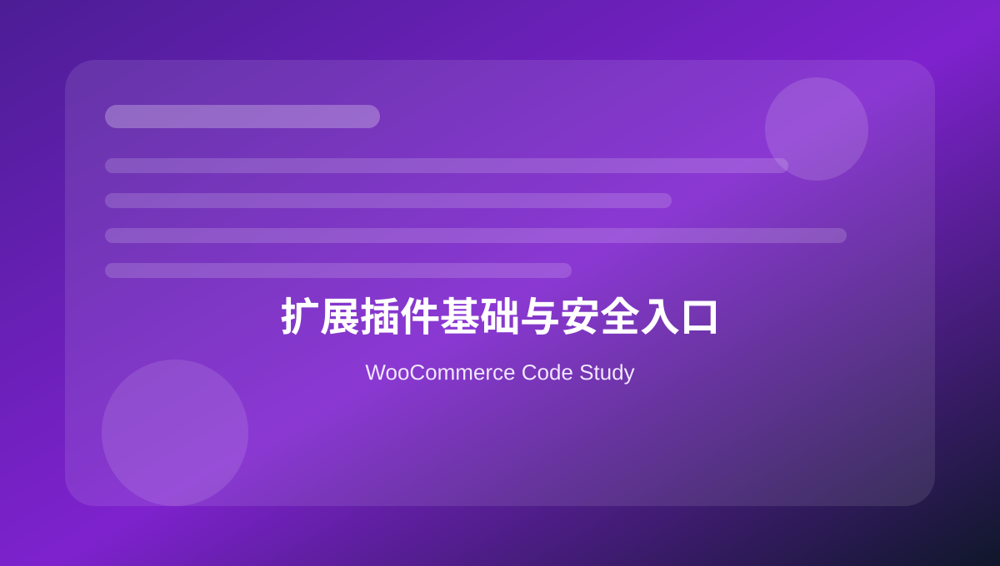

WooCommerce Learning Kit - Code Study Edition
面向深入学习的 WooCommerce 代码研究包：20 个主题页面，122+ 个代码场景，覆盖产品、购物车、结账、订单、邮件、配送、支付、优惠券、REST API、HPOS、性能和调试。

学习说明
这个版本重点偏向 WooCommerce 功能和代码研究，不再停留在后台基础操作。每个页面围绕真实二次开发场景整理多个代码片段，并同步生成 snippets 文件，方便后期复制、拆分和深入研究。
建议优先用本地测试站或 staging 环境验证代码，尤其是支付、订单、库存、优惠券和邮件相关代码。
122+ code snippets
products
cart
checkout
orders
payments
shipping
HPOS
REST API